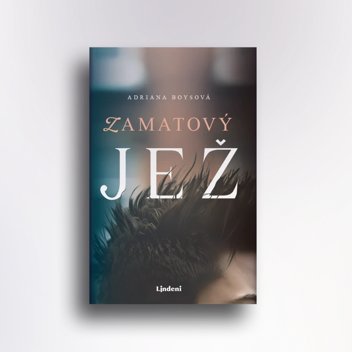
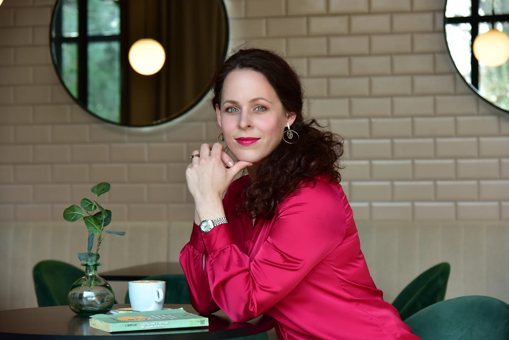
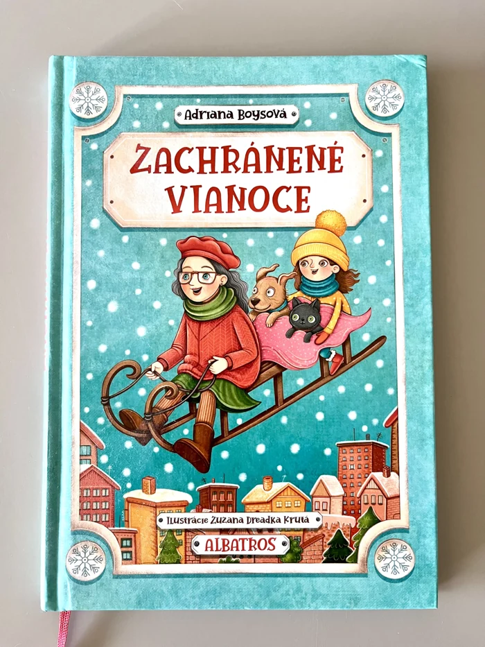
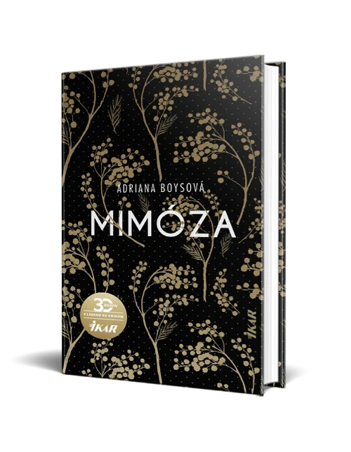
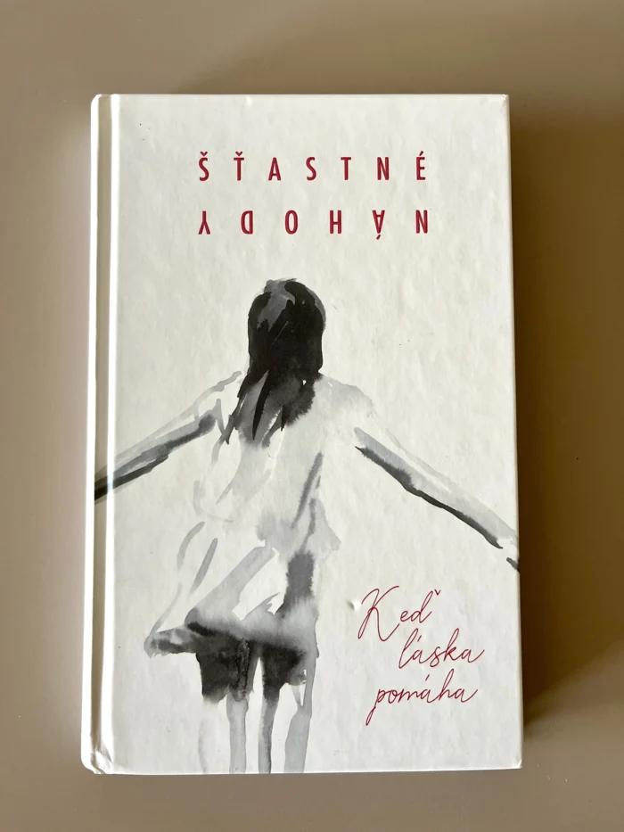
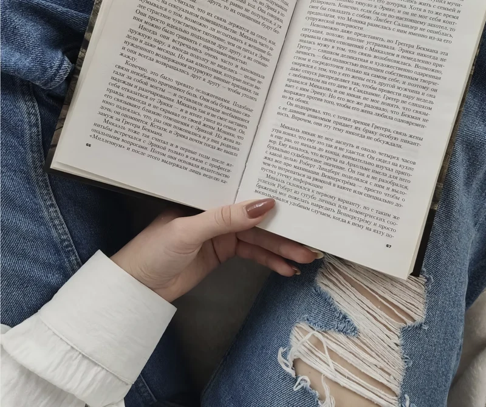

Zamatový jež
Spoločenský román
Viac o knihe
Objavte svet plný emócií a príbehov, ktoré vo vás prebudia zvedavosť a zanechajú stopu aj po tom, čo dočítate poslednú stranu.

Spoločenský román
Viac o knihe
Rozprávkový príbeh s vôňou škorice
Viac o knihe
Poviedky o láske i neláske
Viac o knihe
Kniha, ktorá pomáha


Podľa dohody
Ak ťa zaujíma moja tvorba, ozvi sa, rada sa porozprávam
o knihách, písaní či knižných novinkách.